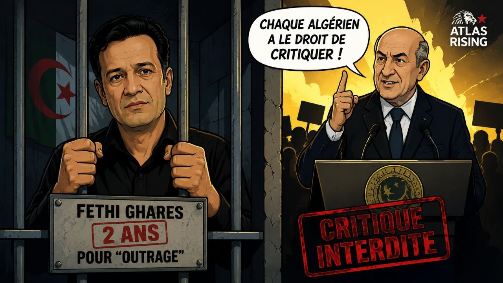
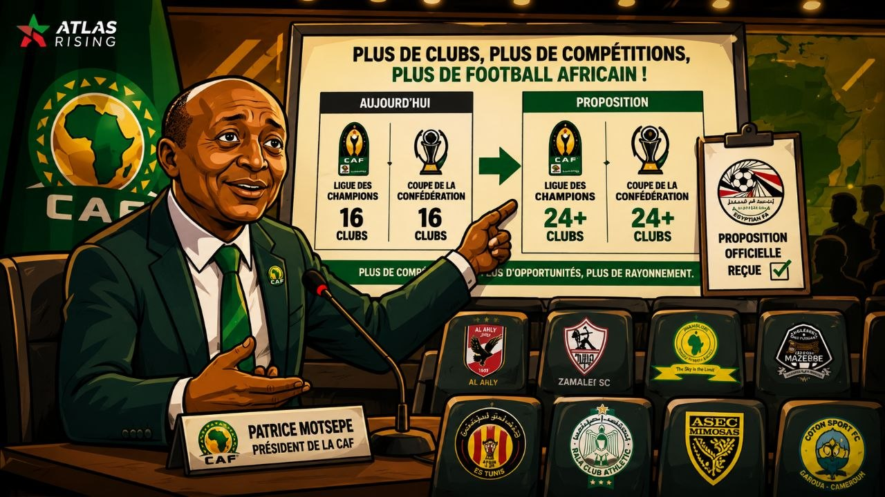

Géopolitique
Mali-Maroc : Bamako réitère son soutien sur le Sahara
Lors de la 4e Commission mixte à Bamako, le Mali a réaffirmé son soutien au plan d'autonomie marocain, seule solution crédible au différend du Sahara.
Lors de la 4e Commission mixte à Bamako, le Mali a réaffirmé son soutien au plan d'autonomie marocain, seule solution crédible au différend du Sahara.

Le leader du MDS, parti interdit, écope de deux ans de prison ferme pour « outrage », six jours après un appel de Tebboune à la liberté de critique.

Le président de la CAF Patrice Motsepe propose d'augmenter le nombre de clubs africains en Ligue des champions et en Coupe de la Confédération.
Le président roumain Nicușor Dan affirme que le plan d'autonomie marocain de 2007 constitue la base la plus crédible pour résoudre le dossier du Sahara.